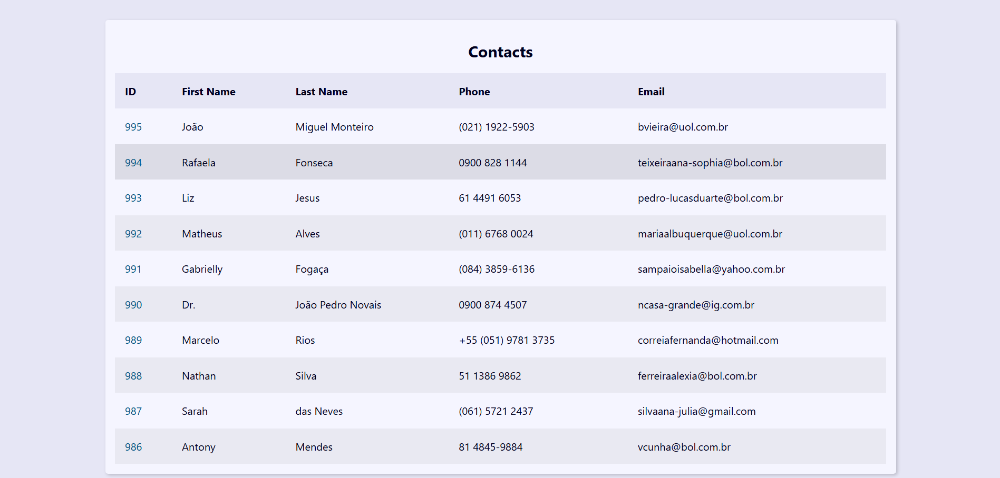

AUTOMAÇÃO
Principais resultados: Automação do processo de cadastro de milhares de produtos no Sistema usando Python para ser executado de forma diária e sob demanda
Estou sempre em busca de novas conexões e oportunidades de aprendizado! Acredito que o verdadeiro valor do LinkedIn está nas interações e no compartilhamento de experiências. Vamos nos conectar e trocar conhecimentos para crescermos juntos profissionalmente! Segue lá YURI NORIKI

Sou um profissional apaixonado por Tecnologia da Informação, com experiência em automação, análise de dados, desenvolvimento web com Django e criação de interfaces gráficas usando PySide6. Minha trajetória inclui um curso intensivo de Python, onde desenvolvi competências em programação, SQL e desenvolvimento front-end. Para explorar meus projetos e contribuições adicionais, visite meu GitHub: Yuri Noriki
Além das minhas habilidades técnicas, também sou proficiente em design gráfico com Canva, onde crio visuais atraentes para a página do Instagram "The Norikones". Tenho uma capacidade rápida de aprendizado e adapto-me facilmente a novos ambientes e desafios. Sou proativo na pesquisa e resolução de problemas, sempre buscando adquirir novos conhecimentos e aplicar soluções inovadoras.
Aproveitando a proficiencia em design faço landing pages bem intuitivas de visualização e navegação!!Estou em busca de oportunidades para contribuir com minhas habilidades e crescer profissionalmente em projetos desafiadores e de impacto.
Projetos principais
Principais resultados: Automação do processo de cadastro de milhares de produtos no Sistema usando Python para ser executado de forma diária e sob demanda
"Desenvolvemos uma Agenda aplicação de agenda digital com o framework Django, onde os contatos são gerados por dados fictícios (via Faker), permitindo o armazenamento seguro e organizado na base de dados. A ferramenta oferece funcionalidades de busca inteligente para agilizar a localização de contatos, além de permitir a criação e edição de novos registros de forma fácil e intuitiva. Tudo para garantir uma experiência prática e eficiente na gestão de contatos."
Uma landing page, ou página de destino, é uma página web otimizada para captar a atenção dos visitantes e incentivá-los a realizar uma ação específica, como se cadastrar, baixar um conteúdo ou fazer uma compra. Ela é projetada com foco em conversão, apresentando de forma objetiva os principais benefícios e diferenciais do produto, serviço ou oferta, sempre com um call-to-action (CTA) claro e chamativo.
CONTATO: yushinzato@gmail.com